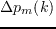
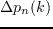
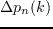

It has been shown that while the LC algorithm is optimal in the case of a single line, the straightforward multi-user expansion of this (IWF) is decidedly sub-optimal. Cioffi, Sonalkar, and Lee, in J. Lee (2005) presented a heuristic extension to the Levin-Campello Algorithm, termed Multi-User Greedy Spectrum Balancing.
The heuristic applied was, instead of in IWF where each line is individually optimised, the bundle is viewed as a whole, and bits are iteratively assigned to both the line and channel with the minimum cost of addition.
This cost of bit-incrementing, which for IWF was simply
 where  was the line being balanced, and
was the line being balanced, and  was the channel on the line with the lowest additional power requirement; additionally includes the sum of
 on all other lines required to accommodate the additional cross-talk generated on the incremented line (2.31).
was the channel on the line with the lowest additional power requirement; additionally includes the sum of
 on all other lines required to accommodate the additional cross-talk generated on the incremented line (2.31).
Andrew Bolster
2011-05-22